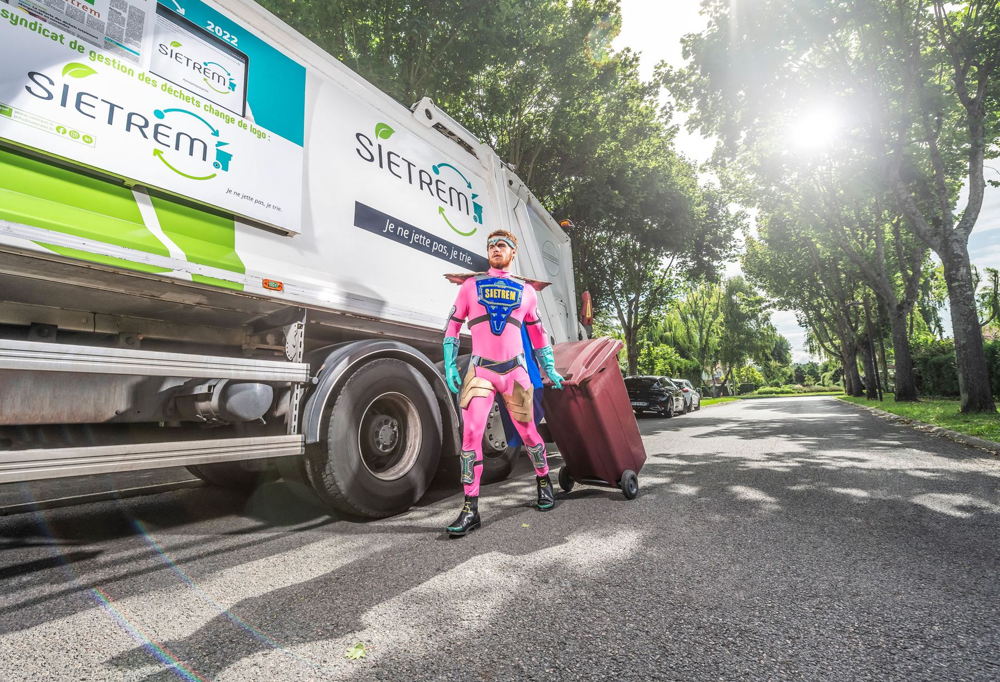
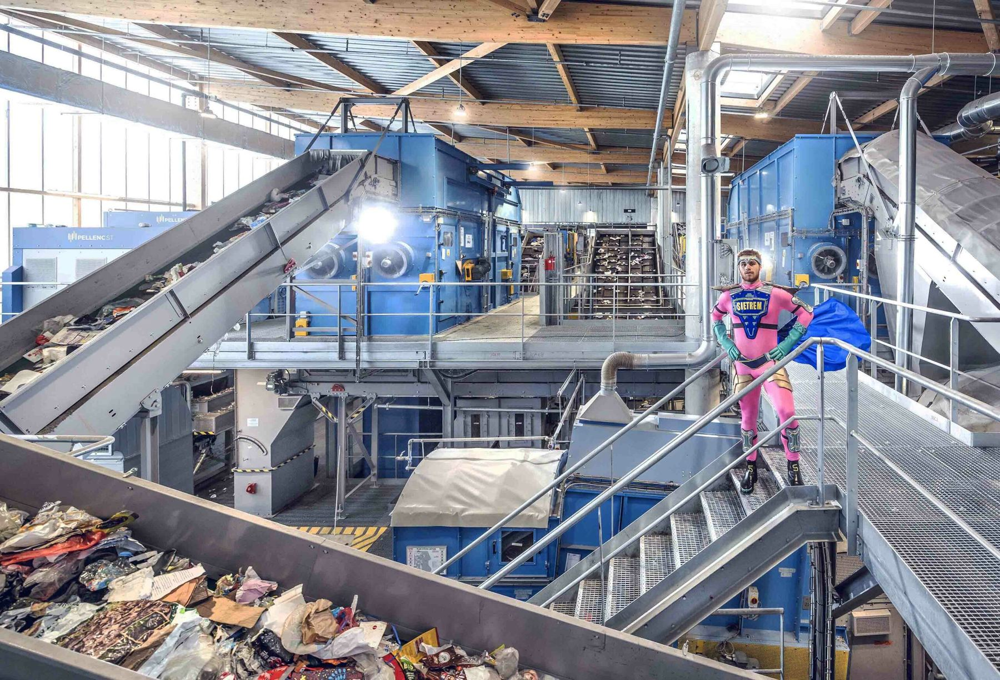
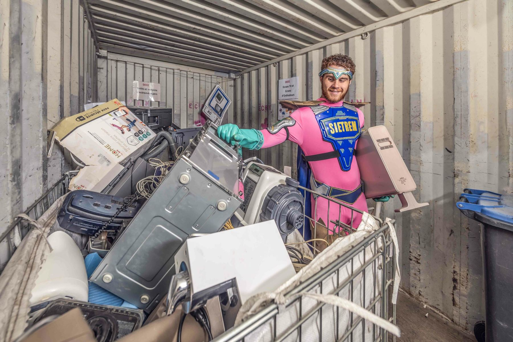
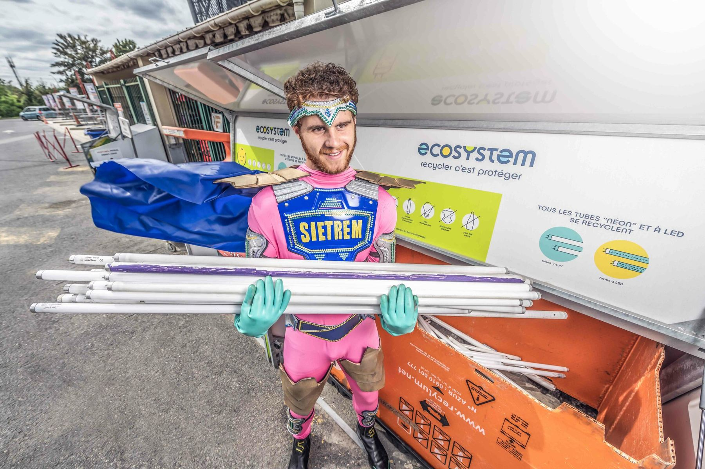
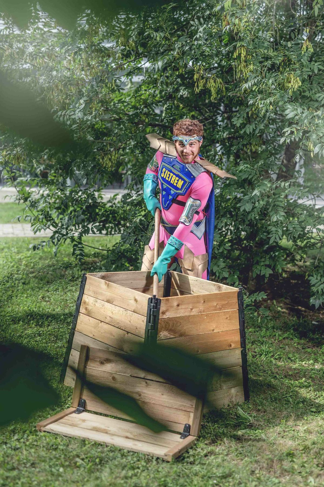
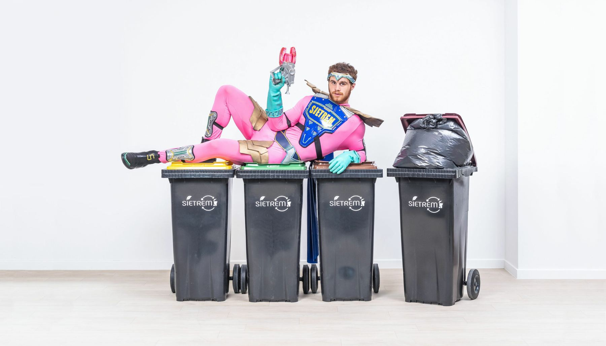
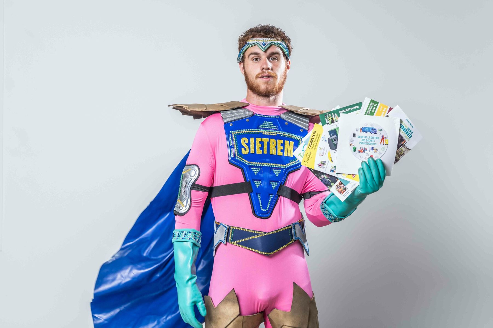

Un syndicat public de gestion des déchets, ça ne fait pas rêver. Et pourtant, ça touche tout le monde.
Au pilotage de cette refonte, je conçois et coordonne une refonte totale d'identité, déclinée en saga super-héros : les trieurs comme vrais super-héros du quotidien. Démarche co-construite avec l'agence Originis (Cyril Toutain) à partir d'une anecdote Goldorak dans le bureau du Président Christian Robache, série photo par Téo Jaffre alias Téo Lavabo, affichage mobilier urbain par JCDecaux. Refonte du site et de l'app mobile par Originis.
Logo, charte graphique, magazine Le Tri'mestriel distribué à chaque foyer, signalétique, présence digitale : tout est repensé à la main, de A à Z, pour recréer cohérence et lisibilité. Vingt visuels de saga, captations événements, contenu continu sur trois ans.
Sur la période, le territoire réduit ses déchets de 13 % par habitant entre 2021 et 2023. La campagne s'inscrit dans ce mouvement plus large (biodéchets, nouveau centre de tri en 2022, contexte économique) — elle n'en revendique pas le mérite. Mais le syndicat, lui, ressemble enfin à ce qu'il fait.






